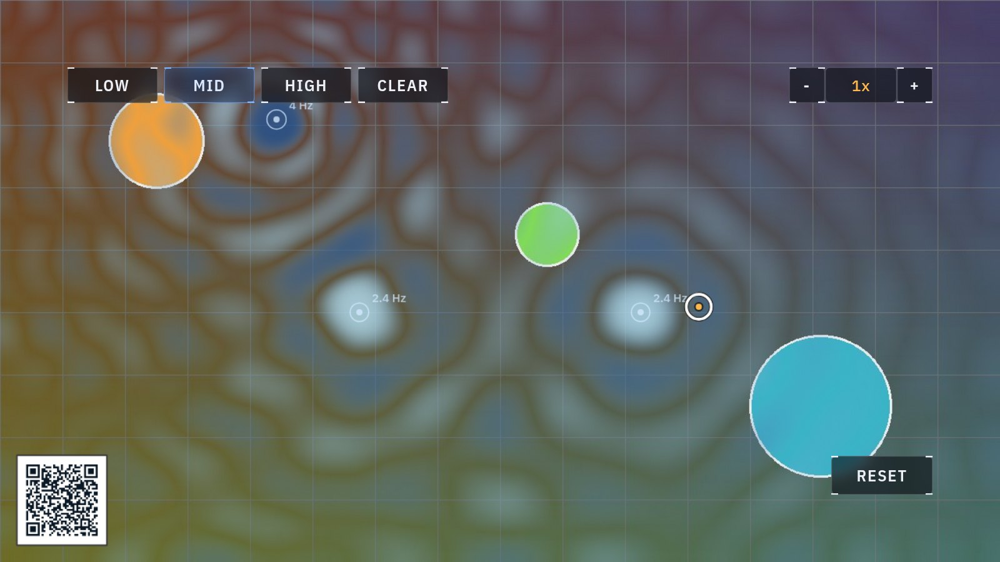
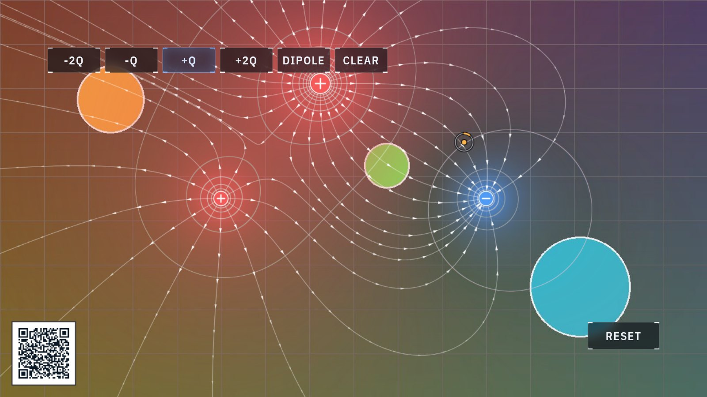

Interactive display · hand-tracked
Physics you can pinch.
A camera on the display tracks your bare hands in real time. Pinch your fingers together in the air and you can grab, throw and steer seven small experiments — no touchscreen, no controllers.

The seven experiments
Each one runs real physics, computed live while you play with it. Scan the QR code on any running experiment — or tap a card — for the story behind it.
Black hole
The camera feed, bent around a black hole the way real starlight bends.

Slingshot
Stretch a band, launch a ball, and watch three real forces fight over it.

Orbitals
Drop stars, planets and comets into space and see what gravity builds — or wrecks.

Waves
A ripple tank: place sources, watch circular waves add up or cancel out.

Charges
Sprinkle + and − charges and the invisible electric field appears around them.

Spacetime
The stretched-sheet picture of gravity, drawn to scale — stars are bowls, black holes are funnels.

Schrödinger's cat
Run the famous 1935 thought experiment yourself: while the box is closed, the cat is both.
Behind the screen
A small computer (an NVIDIA Jetson) watches the camera and finds 21 landmarks on each of your hands, 30 times a second, using a neural network. The distance between your fingertip and thumb tells it when you've pinched; the physics — orbits, ripples, curved spacetime — is computed live in the same box and drawn over the camera image.
Nothing is recorded. The camera feed is processed inside the display and never stored or sent anywhere — by the time you walk away, the frames are already gone.